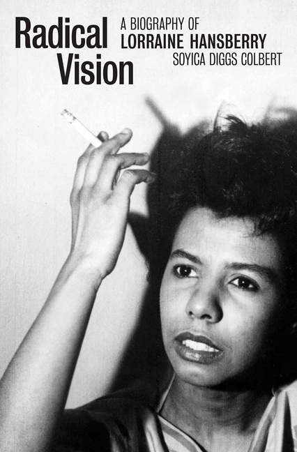
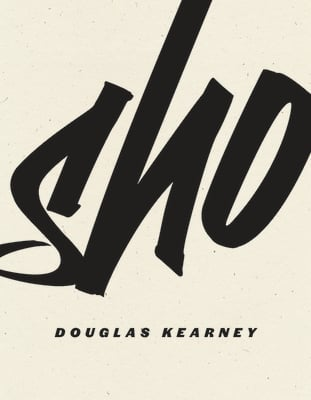
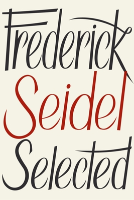
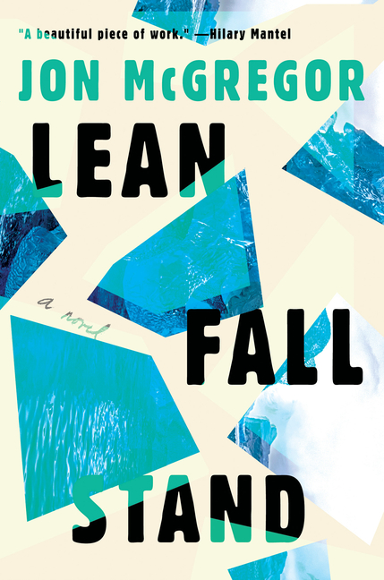
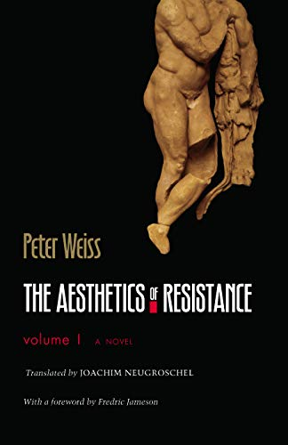

Sehgal deftly takes on the style of the theatre in her review of a book about Chicago’s greatest playwright, by opening her first paragraph like the first scene in a play.
“The curtain rises on a dim, drab room. An alarm sounds, and a woman wakes. She tries to rouse her sleeping child and husband, calling out: ‘Get up!’ It is the opening scene—and the injunction—of Lorraine Hansberry’s 1959 play A Raisin in the Sun, the story of a Black family living on the South Side of Chicago.”

Reviews-in-dialogue are my new favorite thing. I love how naturalistic and conversational they are, as the form really allows critics to be themselves. Chang and Rader are a joy to read.
“Kearney’s body of work is very much about play with language, yet, that somehow feels like it diminishes the political aspects of his poems and his body of work. Perhaps play itself in Kearney’s work is a political act. I find this tension fascinating because on the one hand, I often get carried away in Kearney’s language (and the conceptual aspects of his work), but I’m also acutely aware of the humanity in his work (or the exploration of anti-humanity). In this way, maybe play and the political are not mutually exclusive. Maybe for Kearney, play = confrontation.”

Rosier does a great job bringing paratext to bear on the text itself, in this case interviews and Seidel’s other work.
“For a poet as revered as Seidel, there are scant mentions of turns of phrase being Seidelian, few poetic narratives or structures construed as Seidelesque. Chalk it up to the oddity of a formalist disassociating form from content; Seidel uses form like a hypnotist to mesmerize readers so that they are sedated, or at the very least put at ease, in spite of his content.”
Every editor’s dream assignment is a critic with deep subject matter expertise, and you can’t beat Liming—author of What A Library Means to A Woman: Edith Wharton and the Will to Collect Books—writing about Wharton’s ghost stories.
“Here are ‘fetches’ (ominous doppelgangers) of Celtic superstition, zombie mistresses rising from the grave, and ghost dogs, even. But for each of these paranormal threats there is an equally normal, equally mundane, and equally human villain attached to the story. In this way, Wharton’s Ghosts can be read and interpreted in concert with many of her better-known works, including novels like The House of Mirth and The Age of Innocence, which tell stories of everyday human malice.”

Some of the best reviews are the product of a critic who brings personal experience into their analysis of the book at hand. Ringer’s perspective on Lean Fall Stand is full of unique insights and emotional power. (Disclosure: I founded the Chicago Review of Books in 2016, but stepped back from an editorial role in 2019.)
“Though there was a time—before we met, before his diagnosis—when my husband traveled to Antarctica, Robert and Anna’s story is not ours. It is barely even close. But Lean Fall Stand reads like a meditation on the questions we all must someday face: Who am I? What can I stand? Who will be there when I fall?”

Speaking of hybrids between personal essays and reviews, Ruby’s experience discovering the work of Weiss during the 2016 election is riveting stuff.
“By creating physical objects that survive their creators and the world in which they were made, the artist helps to manufacture the continuity of our collective experience of historical time, and to the extent that it distinguishes itself, the work of art can become a symbol of that continuity. ‘Imagination lived so long as human beings who resisted lived,’ the narrator writes, but in the end what Weiss demonstrates in The Aesthetic of Resistance is that the converse is also true, and just as important, then as now, for what the imagination always has and always will resist is death.”.